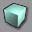
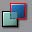
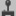
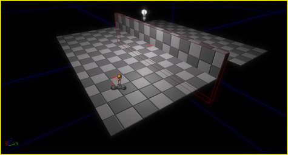
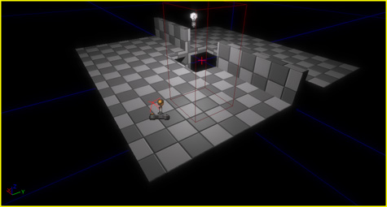
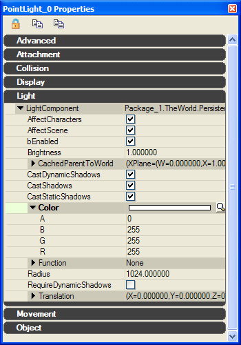

UDN
Search public documentation:
CreatingLevelsKR
English Translation
日本語訳
中国翻译
Interested in the Unreal Engine?
Visit the Unreal Technology site.
Looking for jobs and company info?
Check out the Epic games site.
Questions about support via UDN?
Contact the UDN Staff
日本語訳
中国翻译
Interested in the Unreal Engine?
Visit the Unreal Technology site.
Looking for jobs and company info?
Check out the Epic games site.
Questions about support via UDN?
Contact the UDN Staff
레벨 제작하기
문서 변경내역: Warren Marshall 작성.
개요
시작하기
레벨의 기본
BSP
BSP는 월드의 겉껍데기를 형성합니다. 이는 엔진의 표시여부/네트워킹 하위 시스템의 기본요소이며, 레벨에서 커다란 지오메트리의 대부분을 형성합니다. BSP 지오메트리를 월드에 추가하려면 (빨강) 빌더 브러시를 사용해야 합니다. 아주 기본적인 큐브를 월드에 추가해 봅시다.- Cube(큐브) 브러시 빌더 버튼을 오른쪽 클릭 합니다.

- 다음 속성 값을 입력하세요: X=1024,Y=1024,Z=32.
- Properties 빌드 버튼을 클릭 하면 변경된 내용으로 업데이트 됩니다.
- Add Brush(브러시 추가) 버튼을 클릭하세요.

 BSP의 브러시 속성과 작동에 대해 더 상세한 설명이 필요하면 Using Bsp Brushes KR 페이지를 참조하십시오. BSP 지오메트리를 더 잘 활용하기 원한다면 Geometry Mode Tutorial를 보십시오.
BSP의 브러시 속성과 작동에 대해 더 상세한 설명이 필요하면 Using Bsp Brushes KR 페이지를 참조하십시오. BSP 지오메트리를 더 잘 활용하기 원한다면 Geometry Mode Tutorial를 보십시오.
라이트
이 시점에서 레벨을 플레이하는 것은 의미가 없습니다. 아직 아무 것도 볼 수 없기 때문입니다. 그럼 라이트를 넣어 보지요. BSP 표면의 대략 가운데를 오른쪽 클릭하여 Add Actor(액터 추가) 하위 메뉴에서 Add Light(라이트 추가) 메뉴 아이템을 선택하세요. 도구를 사용해서 라이트가 그 지역을 좀 더 잘 비추도록 약간 위로 끌어 올리세요. 뷰포트를 라이트를 지원하는 보기 모드로 바꾸세요. 그러면 다음 그림과 같이 보일 것입니다. 이 방법은 Point Light(포인트 라이트)를 넣는 것입니다. 다른 종류의 라이트를 넣으려면 콘텐츠 브라우저를 열어서, 여러가지 액터 클래스가 표시되는 액터 탭을 클릭하십시오. 그 다음 Light 범주를 열어서 여러분이 원하는 클래스를 선택합니다. 아까처럼 레벨을 오른쪽 클릭하면, 그 위치에 선택한 라이트를 넣는 옵션이 나옵니다.
라이트에 대한 좀더 자세한 정보는 Lighting Reference KR 및 Lightmass KR 페이지를 참고해 주시기 바랍니다.
이 방법은 Point Light(포인트 라이트)를 넣는 것입니다. 다른 종류의 라이트를 넣으려면 콘텐츠 브라우저를 열어서, 여러가지 액터 클래스가 표시되는 액터 탭을 클릭하십시오. 그 다음 Light 범주를 열어서 여러분이 원하는 클래스를 선택합니다. 아까처럼 레벨을 오른쪽 클릭하면, 그 위치에 선택한 라이트를 넣는 옵션이 나옵니다.
라이트에 대한 좀더 자세한 정보는 Lighting Reference KR 및 Lightmass KR 페이지를 참고해 주시기 바랍니다.
Player Start
레벨이 로드될 때 플레이어를 어디서부터 시작되게 할 것인지 게임에 알려야 합니다. BSP 표면에서 아무곳이나 오른쪽 클릭, Add Actor 하위 메뉴에서 PlayerStart(플레이어 시작) 메뉴 아이템을 선택하세요. 그러면 다음 그림과 같은 장면이 나타날 것입니다.
레벨 플레이하기
레벨을 플레이해서 여러분이 만든 것을 보기에 앞서, 툴바에서 Build Geometry(지오메트리 빌드하기) (https://udn.epicgames.com/pub/Three/CreatingLevels/cal5.jpg)를 클릭하여 레벨을 빌드해야 합니다. 지오메트리가 빌드되고 나면, Play In Editor(PIE) 나 Play From Here(여기서부터 플레이) 중 하나를 선택할 수 있습니다. 게임 윈도우를 닫고 에디터로 돌아가려면 ESC 키를 누르세요.에디터에서 플레이
Play This Level(이 레벨 플레이) 버튼을 클릭하십시오
. 레벨이 로드되고 Player Start 위치에서 플레이 시작됩니다.여기에서 플레이
레벨 작업을 하다보면 어쩔 수 없이 크기가 커져서, 처음부터 여러분이 테스트 하려는 지점까지 다시 돌리는 것이 골치거리가 될 수 있습니다. 레벨의 어떤 지점에서부터 플레이를 하고 싶을 경우에는 레벨에서 바닥을 오른쪽 클릭, 메뉴 아이템 Play From Here 를 선택하십시오. 이는 보통의 경우와 마찬가지로 게임을 로드하지만, 여러분이 클릭한 곳이 시작 위치가 됩니다.부가 지오메트리
플레이어 봉쇄
레벨을 플레이할 때 여러분이 BSP의 가장자리를 밟고 넘어가 허공으로 떨어지는 일이 발생할 수 있음을 알아챘을 것입니다. 엔진은 레벨에서의 플레이어의 움직임에 제한을 두지 않습니다. 따라서 떨어짐을 방지하는 일은 여러분에게 달려 있습니다. BSP를 좀 더 사용함으로써 그들이 허공으로 떨어지지 않도록 해야 합니다. 한 예로, 재빨리 벽을 하나 만들어서 어떻게 되나 보기로 하지요;- Cube 브러시 빌더 버튼을 오른쪽 클릭 하십시오.
- 다음의 속성 값을 입력하십시오: X=1024,Y=32,Z=256.
- Properties 빌드 버튼을 누르면 변경 내용이 업데이트 됩니다.
- Add Brush 버튼을 클릭하십시오.

레벨을 플레이해 보면, 새로 형성된 이 벽이 여러분을 막아준다는 것을 알게 될 것입니다. 공간과 지역을 잘 둘러싸면 플레이어를 허공 속으로 잃어버리는 일은 없을 것입니다.창문, 문 및 함정
언리얼 엔진은 더하기 외에 빼기 등 다른 BSP 연산을 지원합니다. 바닥에 웅덩이를 하나 만들어 봅시다.- Cube 브러시 빌더 버튼을 오른쪽 클릭하십시오.
- 다음의 속성 값을 입력하십시오: X=256,Y=256,Z=512.
- Properties 빌드 버튼을 누르면 변경 내용이 업데이트 됩니다.
- Subtract Brush 버튼을 클릭하십시오.


레벨을 플레이해 보면, 조금 전에 만들어진 벽이 아직도 여러분이 그 너머로 가는 것을 막아주지만, 이번에는 바닥에 생긴 구멍으로 떨어진다는 것을 알게 됩니다. 이 방법은 창문, 문 등 여러분이 만들어내고자 하는 어떤 대상에든지 적용할 수 있습니다.스카이 돔
언리얼 엔진 3에서는 월드를 덮고있는 아주 커다란 돔의 내부에 하늘 머티리얼을 적용함으로써 하늘을 만듭니다. 이 머티리얼은 대개 가장자리가 월드의 안개와 혼합된 안개 색으로 융합된, 좌우로 돌아가는 구름 텍스처의 세트로 되어 있습니다. 어떤 머티리얼에서는 태양을 표현하는 데 방사성 마스크가 사용됩니다. 머티리얼에서의 텍스처 레이아웃은 돔 메시용 UV 매핑에 달려 있습니다. 그 중 일부는 평면으로, 일부는 원형으로 매핑되어 있습니다. 이 머티리얼들은 돔에 적용되며, 이 돔은 월드에 놓여지고 아주 커다란 크기로 확대됩니다. 이는 평행에 대한 고정관념을 바꿔줍니다.원점에서 벗어난 작업
단순한 작업을 위해, 우리는 아직 빌더 브러시를 전혀 움직여 보지 않았습니다. 물론, 빌더 브러시를 마음대로 움직여도 좋습니다. 그리고 같은 빌더 브러시를 사용해서 원하는 수효만큼 빌더 브러시를 가감할 수 있습니다. 한 번 해 보세요. 빌더 브러시를 선택해서 위젯으로 그 브러시를 이리저리 끌어 옮기고, 회전시켜 보세요. 그리고 새 브러시를 몇개 추가해 보세요. 일단 도구에 익숙해지면 힘들이지 않고 보기 좋은 모양들을 만들어 낼 수 있습니다. 그 한 예로, 다음 장면은 순전히 BSP 안에서 만들어진 것입니다. 물론, 라이트의 색깔, 다른 머티리얼 및 스태틱 메시 등 장식적인 것들을 적용하기 시작하면 여러분의 작품들은 훨씬 보기 좋습니다.
물론, 라이트의 색깔, 다른 머티리얼 및 스태틱 메시 등 장식적인 것들을 적용하기 시작하면 여러분의 작품들은 훨씬 보기 좋습니다.
라이트의 색깔
자, 다시 원래의 레벨 작업으로 돌아가서, 라이트를 멋있는 오렌지색으로 바꿔봅시다. 뷰포트의 라이트를 더블클릭하면(또는 F4 를 누르면) 액터 속성 윈도우가 나타날 것입니다. Light 범주, LightComponent 를 차례로 열어, Color 를 클릭하세요.
여기에 있는 돋보기를 클릭하면 표준 윈도우 색깔 선택 상자가 나타날 것입니다. 예쁜 오렌지색을 선택하고 OK 를 클릭하세요. 화면이 다음과 같이 바뀔 것입니다.
머티리얼
BSP의 표면에 머티리얼을 적용하는 것은 쉬운 일입니다. 머티리얼을 적용하려고 하는 표면을 선택해서, 콘텐츠 브라우저에 있는 머티리얼을 클릭하면 됩니다. 이 머티리얼은 선택된 표면 전체에 적용됩니다. 저는 여기서 텍스처 패키지 가운데 하나를 열어 몇 가지 머티리얼을 재빨리 BSP 표면에 적용했습니다. 머티리얼에 대한 상세한 정보는 Materials Tutorial KR 페이지를 참고하시기 바랍니다.
머티리얼에 대한 상세한 정보는 Materials Tutorial KR 페이지를 참고하시기 바랍니다.
스태틱 메시
레벨에 디테일을 빠르게 살리기에 스태틱 메시만한 것이 없습니다. 일일히 손으로 세울 필요는 없습니다. 스태틱 메시는 여기서 다루기에는 너무 큰 주제이지만, 그래도 약간의 기초를 다루기로 하겠습니다. 레벨에 스태틱 메시를 추가하려면, 먼저 콘텐츠 브라우저에서 이를 선택해야 합니다. 그 다음 레벨에서 아무곳이나 오른쪽 클릭을 해서 Add Actor 하위메뉴 가운데서 Add StaticMesh 를 선택하십시오 레벨에 스태틱 메시가 추가 되었습니다. 여러분은 이를 끌거나 회전시키는 등으로, 원하는 위치에 가져올 수 있습니다. 다음은 우리의 레벨에 스태틱 메시가 추가된 모습입니다( 메시를 알아보기 쉽게 하기 위해 라이트를 다시 흰색으로 바꿨습니다 ): 여기서 볼 수 있듯이, 스태틱 메시는 BSP와 똑같이 빛나고 있어서 이것과 BSP 표면 사이의 다른 점을 집어낼 수 없습니다. 스태틱 메시는 최소한의 수고로 레벨에 많은 디테일을 첨가할 수 있는 좋은 방법입니다.
스태틱 메시에 대한 상세한 정보는 Importing Static Mesh Tutorial KR 페이지를 참고하시기 바랍니다.
여기서 볼 수 있듯이, 스태틱 메시는 BSP와 똑같이 빛나고 있어서 이것과 BSP 표면 사이의 다른 점을 집어낼 수 없습니다. 스태틱 메시는 최소한의 수고로 레벨에 많은 디테일을 첨가할 수 있는 좋은 방법입니다.
스태틱 메시에 대한 상세한 정보는 Importing Static Mesh Tutorial KR 페이지를 참고하시기 바랍니다.
터레인
첫 단계는 터레인을 만드는 것입니다. 콘텐츠 브라우저의 Actor 탭에서 Info 아래에 있는 Terrain 액터를 선택하십시오. 월드를 오른쪽 클릭하여 Add Terrain Here 를 선택하십시오. 새로 배치한Terrain 액터를 오른쪽 클릭하여(또는 F4 를 눌러서) Properties 를 선택하십시오. 그 다음 Terrain 섹션에서 NumPatchesX 와 NumPatchesY 의 값을 각각 4 로 바꾸십시오. 3D 뷰포트에서 터레인은, 라이트가 넣어질 때까지는 검정색일 것입니다. 콘텐츠 브라우저의 Actor 탭에서 Light 아래에 있는 Directional Light(직사 라이트) 액터를 선택하십시오. 그 다음 월드를 오른쪽 클릭하여 Add Directional Light Here(여기에 직사 라이트 추가) 를 선택하십시오. 필요에 따라 라이트를 배치하거나 회전시키십시오. 터레인에는 최소한 하나의Layer(층)가 필요합니다. 새로 배치한Terrain 액터를 오른쪽 클릭하여(또는 F4 를 눌러서) Properties 를 선택하십시오. 그 다음 Terrain 섹션에서 Layers 속성 다음에 있는 Add New Item(새 아이템 추가) 을 클릭하십시오. 이제 새 터레인 층의 Setup 속성에 값을 입력해 주어야 합니다. 콘텐츠 브라우저의 Generic 탭에서 리소스 종류를 Terrain Layer 로 한정하십시오. 그 다음 원하는 터레인 층을 선택, 이의 Setup 속성에서 Use Current(현재의 값을 사용) 를 선택하십시오. 이제 터레인 편집 모드로 들어가 높이 조절을 위해 터레인의 표면을 칠함으로써 터레인을 조작할 수 있습니다. 터레인에 관한 정보가 더 필요하시면 Setting Up Terrain 와 Using Terrain 페이지를 참조하십시오.이미터와 파티클 이펙트
사운드
Sound Actors KR? 페이지에 레벨에서 사용할 수 있는 여러가지 종류의 주변 음향에 대한 설명이 들어 있습니다.내비게이션 AI
패쓰노드 설정 및 AI 패쓰 사용법에 관한 정보는 Navigation AI KR 페이지를 참고하시기 바랍니다.레벨 스트리밍
지속 레벨 설정 및 멀티 스트림 레벨에 관한 것은 Level Streaming How To KR 페이지를 참고하시기 바랍니다.레벨 최적화
레벨 성능을 높이는 법은 Level Optimization KR 페이지를, 각종 경고에 대한 설명은 Map Errors KR 페이지를 참고하시기 바랍니다.에픽 레벨 디자이너의 조언
숙련된 레벨 디자이너에겐 너무도 당연하지만, 초보에겐 도움이 될 수도 있는 팁 몇 가지:
|
| 팀원들에게 기본 BSP 구성과 레벨 기초를 완성시킨 이후에는, 빠르게 스크립팅 측면에 익숙해 지도록 할 것을 추천합니다. 프로그래밍이나 스크립팅 경험이 없는 이들에겐 흥미로운 일일 것이며, 화면상에 디자인 목표를 그려내는 데 목마른 사람들에겐 창조성의 금광이라 할 만합니다. 기본 빈 껍데기에 약간의 트리거와 다이내믹 라이트를 주고서 스위치, 게이트, 토글, 액터 팩토리, 오브젝트 부착 등등을 가지고 놀게 해 보십시오. 어느새 독창력을 발위하여 자신만의 디자인 아이디어를 쏟아내고 있을 것입니다. 그렇다곤 해도, 구직에 영향을 미치는 것은 상당한 기본적 비주얼 메시 실력입니다. 렙디 채용 상황에서 시각적인 이점이 스크립팅 경험보다 열에 아홉 우위에 선다는 것, 슬프지만 사실이지요. 일찍서부터 모든 이벤트를 가지고 플레이어 피드백을 주도록 하십시오. 모두가 기본 화면 흔들기 트리거, 파티클 이펙트 스폰, 사운드 재생 트리거 법을 알아야 합니다. 어떤 빌딩을 무너지게 하여 커버같은 것을 이루도록 하는 데 한 시간이 걸렸다면, 제발 5분만 더 투자해서 앞서 3 가지 것들을 추가시켜 진정 "경험"이 되는 이벤트로 만들어 보도록 하십시오. 플레이스홀더 일지라도요. 보스전 실험단계를 만들었다면? 그런데 사운드가 없다면, 거기서 흥미를 느낄 확률은 0에 가깝습니다. "여기 커다란 파이어볼을 받아라" 로그에 출력해 봐야, 하하 사람들이 상상하게 만들긴 쉽지 않습니다. 약간 주제에서 벗어나지만, 여지껏 봐 온 대학 졸업 작품들은 하나같이 플레이어 피드백을 마지막에 다듬을 옵션같은 것으로 생각하는 것 같았습니다. 그러나 현실적으로 보자면 바로 그것이 사람들을 웃게 만드는 핵심 요소인 것입니다. 가르치는 분들께서 피드백의 중요성을 머리속에 일찍 심어주시길 바랍니다. 기본적인 플레이어 상호작용감을 실속있고 재밌게 만들기 위해 멀리 놓인 필드 디자인상의 방점을 약간 버려야만 했다면, 뭐랄까 단지 변덕스런 디자인에 탐닉하여 과도한 디자인 욕구에 흥청망청 빠저드는 것보단 훨씬 큰 도움이 되는 것입니다. 학생이 "한계를 뛰어넘으려면" 실제의 업계나 제품 생산에 구애받지 않는 기회를 택해야 한다는 대중적 인식에 거스르는 말이라는 것은 압니다만... 제 생각엔 피드백과 실속있는 상호작용을 갖춘 단순 디자인을 해 보는 것이, 교문을 나서기도 전에 Derek Smart grand opus 를 좇게 만드는 것보단 낫다고 생각합니다. 프리팹(prefab)이란 인스턴스 모음집인데, 한 프리팹을 변경해도 다른 데 가한 변경사항을 날려버리지 않도록 각 프리팹은 변경이 고정됩니다. 빨강 라이트로 빌드된 프리팹 문을 여기저기 배치하고서, 한 프리팹 라이트를 녹색으로 바꿨습니다. 나중에 모든 문제 사용된 빨강 셰이드를 조정하고 메인 프리팹을 업데이트하면, 빨강 라이트는 새로운 셰이드로 업데이트되지만, 녹색 라이트로 변경한 프리팹 하나는 그대로 녹색으로 남아있게 됩니다. 즉 본질적으로 인스턴스이긴 하나 특정한 인스턴스 하나에 가한 변경은 기억하여, 새로운 변경사항을 전파할때 개별적인 변경사항은 잃지 않도록 한다는 것입니다. |
| 텍스처 아틀라싱(atlas)은 레벨 여기저기 널린 작은 텍스처로 된 메시에만 이득입니다. 통상의 메시에는 여전히 오브젝트당 하나의 텍스처(나, 노멀 디퓨즈 등을 보는 경우 텍스처 세트)로 갑니다. 땅의 잔해나 사인 등 자잘할 물건들이 레벨에 어떻게든 사용되기에 항상 스트리밍되므로, 아틀라싱에 좋은 후보입니다. |
| 처음엔 맵 윤곽을 BSP 로만 잡으십시오. 메시나 라이팅 장난은 필요 없습니다. 프로토타이핑에는 거대한 포인트 라이트 하나 던져놓고, 가급적 단순한 BSP 를 유지합니다. 밝은 체크무늬 BSP 만으로도 재밌다! 이쁘게 만들면 훨씬 더 재밌겠지요. 매우 중요합니다. 약간 덧붙이자면: 게임플레이/스크립팅과 비주얼을 별도의 패스로 스케쥴 잡으십시오. 당연한 소리 아닌가 싶겠지만, 제 견해로는 과거 거쳐왔던 많은 프로젝트에서 이를 지키지 않아 고생을 했었습니다. 디자이너가 비주얼 및 게임플레이/스크립팅을 동시에 진행하게 되었다면, 어딘가에서 혼나게 될 것입니다. 보통은 게임플레이에서 입니다. 초기 게임플레이 문제를 해결하거나 스크립트를 다듬을 시기에, 코드나 애셋이 올라오길 죽치고 기다린 다음 한 주를 불태워 "가구 재배치" 작업을 하고 마는 것은 너무나 진부한 이야기입니다. 같은 사람이 두 작업 모두 하게 되더라도 각각의 스케쥴을 별도로 잡아놓기만 한다면, 비주얼과 게임플레이/스크립팅을 각각 최대로 끌어낼 수 있습니다. UE3 의 키즈멧과 마티네를 통해 이와 같은 작업이 더욱 쉬워집니다. 극 초기에 최종 스크립팅에 가까운 스케쥴이 가능하고, 디자이너가 프로그래머 없이도 무엇이든 만들거나 최소한 프로토타이핑은 가능하기 때문입니다. |